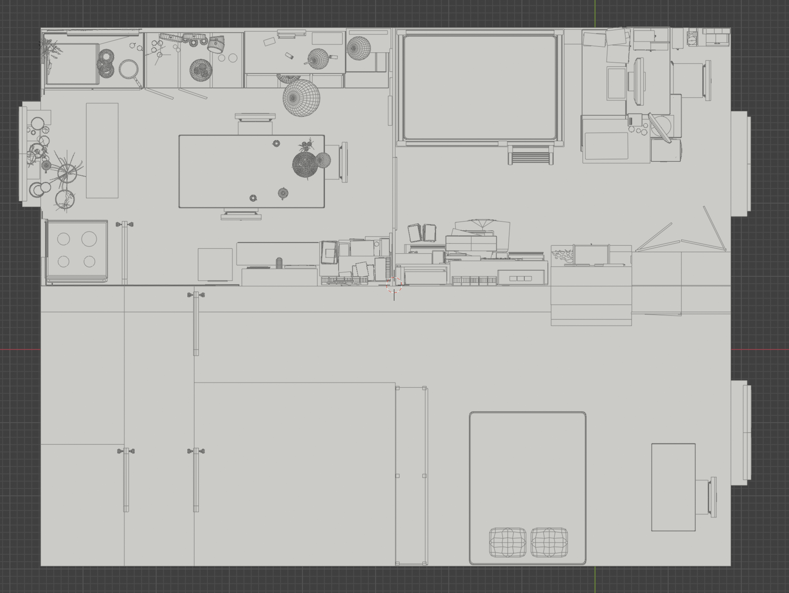

Archive 44 Cours Charlemagne
Experience · Digital
An archival web project reinterpreting the space of an artist’s home in Lyon, France as a digital environment.
The project explores how a real, lived-in space can be translated into an online experience that preserves spatial memory and personal narratives.
The space was reconstructed from photographic documentation through 3D modelling in Blender and developed as a navigable digital environment, proposing a new way to share and preserve memories beyond their original location.
